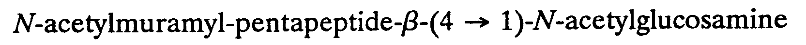

|
©hoose LANGUAGE bArd fr©Ide
8 NAMES OF CHEMICAL COMPOUNDS.
Names of chemical compounds may contain upper- and lower-case English letters, non-English letters, numerals, punctuation, different type forms, small upper-case letters and other symbols. In print, numbers and/or letters may be separated by commas with no space following the comma. Follow the print, but use the numeric or letter indicator before each "single letter" or number. The print type form in names of chemical compounds must be duplicated in braille.
8.1 Print Form. It is essential to follow the print exactly.
Example 8.1-1: n-butyramide
.;n-butyramide
Example 8.1-2: L-1-Tosyl-2-phenylethyl-chloromethylketone
@",l-#1-,tosyl-#2-ph5yle?yl-
*lorome?ylket"o
Example 8.1-3: Guanosine 5' -diphosphate-3' -diphosphate
,guanos9e #5'-diphosphate-
#3'-diphosphate
Example 8.1-4: 2,4-dinitrobenzoic acid
#2,#4-dinitrob5zoic acid
Example 8.1-5: (FH4 stands for tetrahydrofolate.)
N5,N10-methylene-FH4
.;,n^5",.;,n^10"-me?yl5e-,f,h4
Example 8.1-6: dichlorodiaminepalladium(II)
di*lorodiam9epalladium(,,ii)
Example 8.1-7: N-Acetyl-D-glucosamine
.;,n-,acetyl-@",d-glucosam9e
Example 8.1-8: -ketoglutarate
.a-ketoglut>ate
Example 8.1-9: 3-chloro-2,3-dimethylbutanoic acid
#3-*loro-#2,#3-dime?ylbutanoic acid
Example 8.1-10: 5 ,7 -dihydroxy-11-ketotetranorprostane-1,16-dioic acid
#5.a,#7.a-dihydroxy-
#11-ketotetranorpro/ane-
#1,#16-dioic acid
Example 8.1-11:

N-acetylmuramyl-pentapeptide- -(4 1)-N-acetylglucosamine
.;,n-acetylmuramyl-p5tapeptide-
.b-(4 $o #1)-.;,n-acetylglucosam9e
8.2 Contractions. All contractions of English Braille, American Edition are used, except that care must be taken not to contract letters which overlap pre-fixes, suffixes, substituents, or functional groups. Use Nemeth Code rules when contractions are in contact with indicators and symbols of grouping, comparison, and operation.
Example 8.2-1: dinitrophenol
dinitroph5ol
(di-nitro-phenol) (di is a prefix meaning two so the "in" contraction cannot be taken; nitro and phenol are functional groups so the "en" in phenol can be contracted.)
Example 8.2-2: ethylenediaminetetraacetic acid
e?yl5ediam9etetraacetic acid
(ethyl-ene-di-amine-tetra-acetic acid)
ethyl - substituent
ene - suffix meaning double bond
di - second position
amine - substituent
tetra - fourth position
acetic acid - substituent
Example 8.2-3: N-formylmethionine
.;,n-=mylme?ion9e
(N-formyl-methion-ine)
N - protein
formyl - substituent
methion - substituent
ine - suffix
8.3 Division of Names of Chemical Compounds. Sites for the division of names of chemical compounds must be carefully chosen. If possible these sites should be between substituents or functional groups, and numbers or letters preceding or within the name must be on the same line as the following substituent. In these examples, a slash represents preferred runover sites.
Example 8.3-1: 3a,7a,2a-trihydroxycoprostane
3a,7a,2a-tri/hydroxy/copro/stane
Example 8.3-2: 3,5,3 -triiodothyronine
3,5,3'-tri / iodo / thyro / nine
|
 Tჸe $_hodor bARionlegitim@.
Tჸe $_hodor bARionlegitim@.